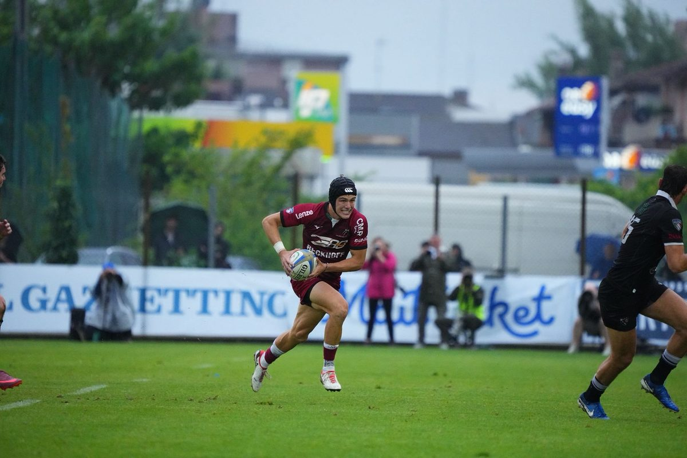

Simone Brisighella
Cresciuto nelle giovanili di Viadana, ha esordito in Serie A Elite con la maglia giallonera. Entrato nell’Accademia federale delle Zebre, ha debuttato in United Rugby Championship contro l’Ulster. Nella stagione 2025/2026, con il Valorugby Emilia, ha vinto lo Scudetto e la Coppa Italia, oltre al doppio premio MVP della Serie A Elite e Miglior Under 23 del campionato (unico a vincere entrambi nella prima edizione degli Awards). Con l’Italia ha indossato la maglia dell’Under 18, Under 19, Under 20 (Sei Nazioni e Mondiali 2024), Seven e Italy XV nel 2026.